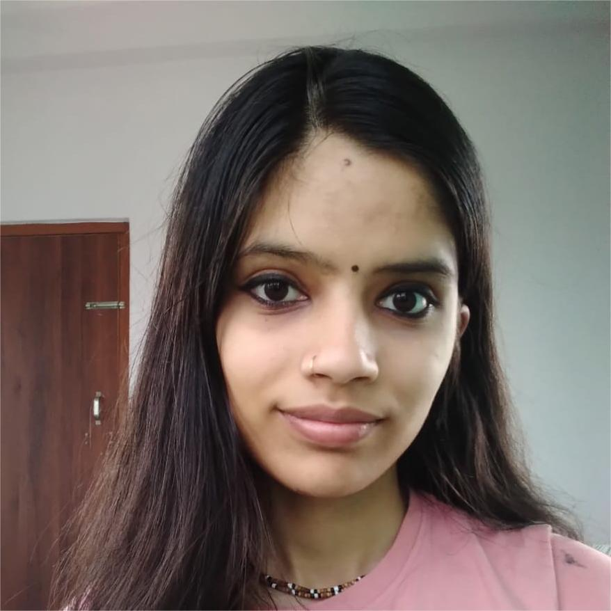

PROJECTS
6
EXPERIENCES
1
CERTIFICATES
1
CURRENT SEM
1

CONTACT
 /priyanka1828
/priyanka1828 /+9779864858146
/+9779864858146
EDUCATION
Pokhara University
- Year 2024-2029
- Pursuing BE-IT
- GPA: /4.0
Tilottama Campus
- Year 2021-2023
- Passed 12th with Physics, Chemistry and Mathematics
- GPA: 3.45/4.0
WORK EXPERIENCE
Code For Change
- General Member
- CFC Rupandehi
- February 2025 - Present
PRIYANKA DUMRE
I am a first year BE-IT (Bachelor of Engineering in Information Technology) student studying in Pokhara University who is eager to learn more and more which is the reason I am learning front-end development beside college studies.
PROJECTS
QR- Generator
March-2025
- HTML, CSS and Javascript are used.
- An qr generator API is used.
Weather Predictor
February-2025
- HTML, CSS and Javascript are used
- An weather searcher API is used.
Currency Converter
February-2025
- HTML, CSS and Javascript are used.
- Two APIs (country flag and exchange rate) are used.
Stone-Paper-Scissors Game
January-2025
- HTML, CSS and Javascript are used.
- It is played between a human and computer.
Calculator
January-2025
- HTML, CSS and Javascript are used.
- It can perform basic calculations used in daily life.
Tic-Tac-Toe Game
December-2024
- HTML, CSS and Javascript are used.
- It can be played between two real players.
SKILLS
- Languages: HTML 5, CSS 3, JavaScript
- Frameworks:
(learning in progress) - Other: Singing, Money Management
PROJECTS


My Journey To Krishna Consciousness
My name is Priyanka. Yah, I haven't wrote Dumre with it. It has a reason with my life journey. I am a girl whose janmabhumi (birthplace) is India but maybe karmabhumi (Workplace) is Nepal.
I was born in New Delhi, India on 28 August 2006 and settled there for my first 10 years then my life took the most difficult turn when I came to Nepal on 2016. My parents took me and my sister where we faced completely different environment: different language, people, society, culture, ritual, even surname (I had my surname as Sharma but coming to Nepal it changed to Dumre) which was totally embarrassing to us. Our parents even stopped us from any connection with my indian friends and relatives. This took a depressing turn where I had no friends and no right to share my feelings and thoughts, just had to study only without any emotional support. I had to develop habit of hiding emotions and make fake smile since the age of 10. So, I had only one medium to share these all who was Krishna. I use call him Kanha. I made some friends in Nepal too but my parents had problem with all of my friends. They use to think that if I spend my time in friendship, my studies will be hampered. I fought the most for my friends too while they used to resist me from talking to them. I had a dream to be something out of study stuffs like actor, singer, etc. but my parents focused only on my studies. So, with these much things in small age, I had a connection with my Kanha for which I am so thankful.
I became habitual of everything then I came to class 11. On 2021, I started studying in class 11 where I had some of my male and female friends. Till class 11, I had genuine friends but after 10th, my friends betrayed me which was completely new to me. I was a life piercing girl in friendship but getting such friends broke me the most and I came to depressing phase again, and again I had no one to share my feelings and used to cry whole night and act in morning like nothing happened. So, only Krishna knew how much I cried and knew all my feelings. Finally Kanha was the one who took me out of that phase, so I automatically started thinking that "Kanha is doing this much to me, what am I doing to him?" From that point I started being serious for Krishna. Also on 2020, we watched Ramayan and Mahabharat from which I got a knowledge of Bhagwadgeeta and how merciful Krishna is. So, I started reading Shrimad Bhagwad geeta too. On class 11 and 12, many of my male friends proposed me and our friendship destroyed. Also my previous school best friends broke friendship with me. From this point, I realized that making friends is not good for me so, I stopped making such friends and had distance from them because I knew that how much pain is in breaking friendship so, it would be nice to never make such friendship. And also, I realized that Krishna is my only best friend.
Because of Shrimad Bhagwadgeeta, I came to know about our dearest pyare acharya AC Bhaktivedanta Swami Srila Prabhupada who is the founder acharya of ISKCON (International Society for Krishna Consciousness). From that I started following ISKCON and started listening spiritual lectures. These much helped me with real peace and happiness I had never experienced ever in my life. After that I use to live a happy and focused life and taught my sister (Srishti) too about this blissful life. I started chanting the Hare Krishna Mahamantra (ie.Hare Krishna Hare Krishna Krishna Krishna Hare Hare, Hare Rama Hare Rama Rama Rama Hare Hare) which helped me stay calm and improved my focus on studies too. I was happy with my life after years, but was seeking for a devotee association to improve more in this path. Then Krishna blessed me with my best friend, Rahul Vaishnav. Previously, I had made an assumption that 'everyone will want you only when you will be useful to them'. But he proved me wrong that 'not everyone'. He was the first person whom I shared all my feelings and thoughts without any fear of being judged after Kanha. He helped me making connections with much more devotees and taught about the most beautiful incarnation of Radha Krishna love called Lord Chaitanya (the most merciful lord in the whole universe). I started vibing on Nitai Gaur Hari Bol. He encouraged me doing 16 rounds of chanting Hare Krishna and helped me with my highs and lows in bhakti. My parents used to stop me doing bhakti too which use to make me sad and my best friend (Rahul) was the one who used to give me support and motivation for devotional services. I used to visit ISKCON temple without informing to parents and used to listen Krishna Katha hiding from them and used to share everything to him including everything explained in the lecture. He motivated me for cooking good food to Krishna, doing Kirtan , applying Tilak and live a peaceful and Satvic life which freed me from most of the torture and depression. Only because of Krishna and my best friend, I am able to manage Bhakti and my studies with full of joy, happiness and peace in life. I am sure that even if anything bad will happen in my life in future, I will never be too depressed that I would ever think of ending life like was before Kanha's arrival.
I would like to thank Krishna aka Kanha for every strength he gave when there was nobody around me, saving me from every bad fortune and teaching me that everything happens for the best because everything is pre-planned by our biggest best friend i.e. Krishna. Also Thank you Krishna for giving me such a person like Rahul in my life to give me support in every minute things.
KANHA, THANK YOU FOR EVERYTHING
Hare Krishna !!
All Glories To Srila Prabhupad.... Hariii Bol...🫶